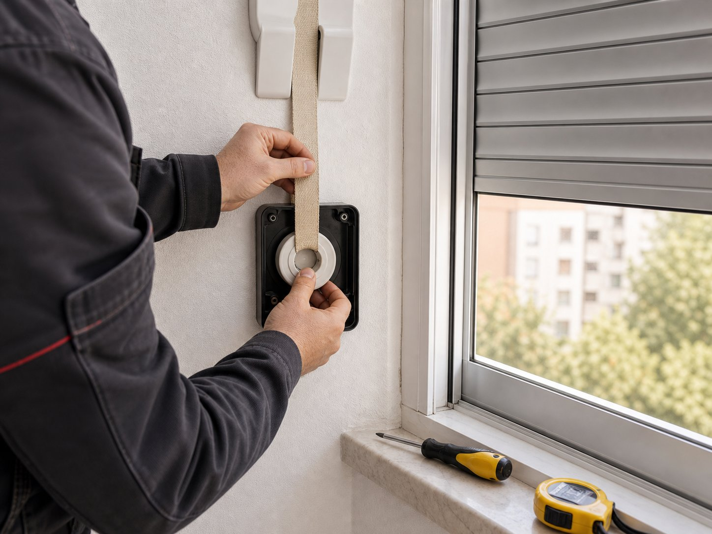

La cinta correcta evita tirones y desgaste
No todas las persianas trabajan igual. Elegimos el ancho y la tensión adecuados para que el movimiento vuelva a ser cómodo.
Cambiamos cinta y recogedor para que la persiana vuelva a subir y bajar con suavidad, sin tirones ni cintas deshilachadas.

No todas las persianas trabajan igual. Elegimos el ancho y la tensión adecuados para que el movimiento vuelva a ser cómodo.
Si el recogedor está vencido o no enrolla bien, cambiar solo la cinta puede quedarse corto. Lo revisamos antes de cerrar el trabajo.
La persiana debe recoger sin golpes, sin quedar floja y sin obligarte a hacer fuerza de más.
La cinta es una de las piezas que más se desgasta con el uso. Cuando la cinta se deshilacha, se rompe o el recogedor deja de tensar, la persiana empieza a costar más de subir, se queda floja o directamente no se mueve. En esos casos, lo más práctico es sustituir la cinta y, si es necesario, el recogedor.
En Persianas Zambrana realizamos el cambio de cinta y recogedor en persianas de viviendas y locales de Málaga, dejando la persiana operativa y con la tensión correcta para que vuelva a funcionar con suavidad.
Si notas alguna de estas situaciones, probablemente toque cambiar la cinta.
Cinta rota o deshilachada que ya no aguanta el peso de la persiana.
Recogedor deteriorado que no enrolla ni tensa la cinta.
Cuesta subir la persiana o se queda floja al recogerla.
La cinta se ha salido del recogedor y no consigues recogerla.
Desgaste por el uso tras años de subir y bajar la persiana.
Mal funcionamiento general relacionado con la cinta o el mecanismo.
En la mayoría de casos, el cambio de cinta se resuelve de forma ágil en una visita.
Recuperas una persiana que sube y baja con normalidad, sin tirones ni atascos.
Cambiar la cinta a tiempo evita que el problema afecte a otras piezas de la persiana.
Cuéntanos qué le ocurre a la cinta o al recogedor por teléfono o WhatsApp.
Comprobamos el ancho de cinta y el estado del recogedor para sustituirlos.
Instalamos la cinta nueva y ajustamos la tensión para un uso cómodo.
Contacta con Persianas Zambrana y la dejamos como nueva. Atención directa por teléfono y WhatsApp en Málaga.
Depende del estado de cada pieza. A veces basta con la cinta y otras veces conviene cambiar también el recogedor si está desgastado. Lo valoramos en cada caso.
Trabajamos con los anchos de cinta habituales en viviendas y locales. Si nos indicas el tipo de persiana, te confirmamos la solución.
En la mayoría de casos sí. El cambio de cinta suele resolverse de forma ágil, aunque depende de la accesibilidad y el estado del mecanismo.
Sí, valoramos el caso y te explicamos la solución propuesta antes de realizar el cambio.